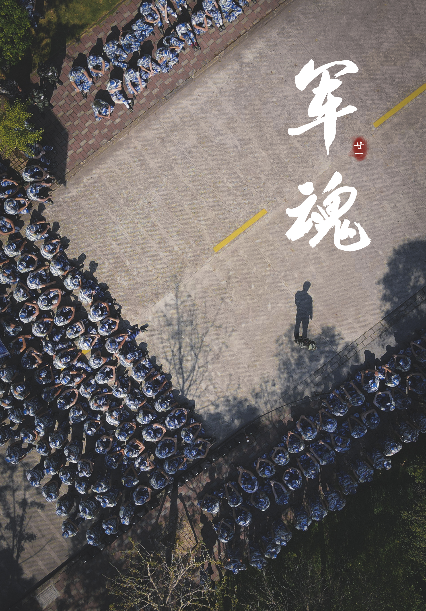
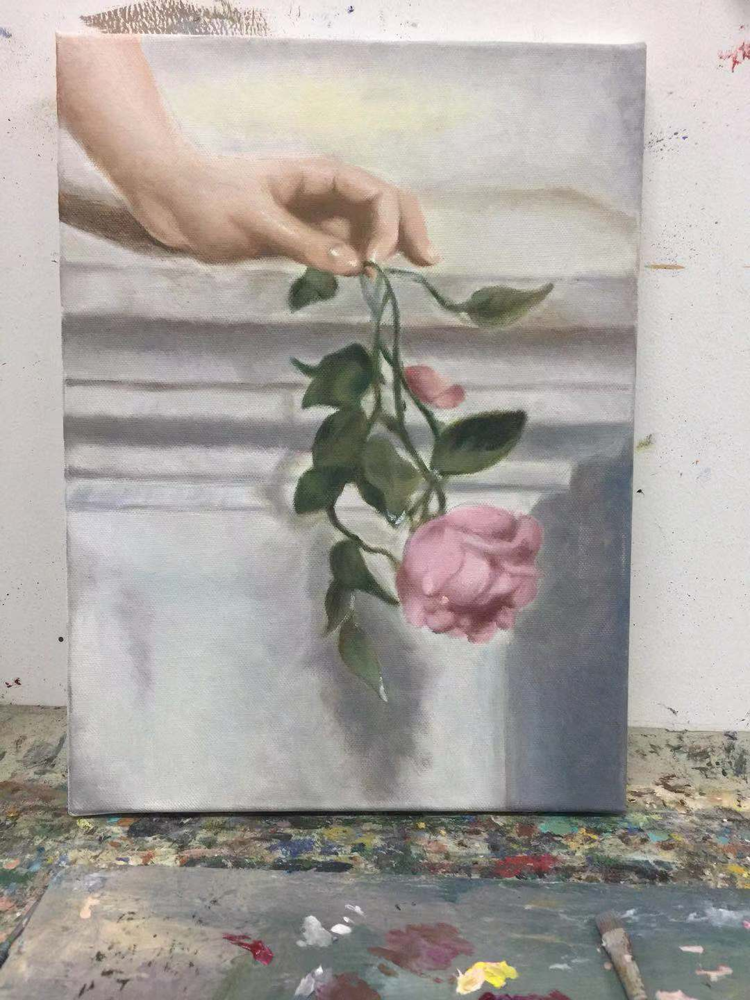
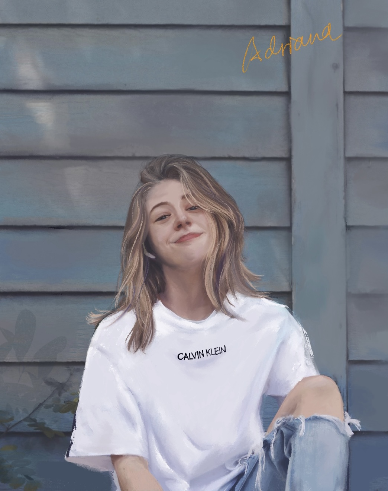

Arts
&
Design
I have a profound interest in arts and design, including painting, photography and digital graphic design.
Below are some of my art collections that marked my creative process.
Photography
I started to capture the world as I see it after graduating from high school, when I owned my first Canon.
That could be described as my first encounter with digital art creation. I began to be amazed by the
light-and-shadow effects, as well as the fresh colors produced by photosensitive elements in the
camera. Attached below are some of my favorite photos along the journey.
- 
-

-

Painting
I observe and feel the way the texture of canvas and my paint brush interact through painting. I started
painting watercolors when I was in primary school, when I was fascinated by Japanese anime and the cool
characters.
Gradually I became interested in oil painting and classics because that was how the majority of masterpieces
in art
history were created.
The ultimate and most courageous attempt I took was to paint a friend's wall--literally her wall upon which
she
would have to stare for every single day. My adventure with painting has never stopped--recently I began to
draw on
Procreate, which is a brand new experience, with all the cool features and vivid simulation of
real-world rendering
effects. I really hope someday I could curate my own gallery…
- 
- 